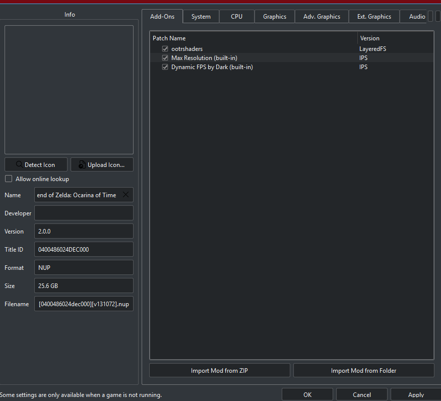
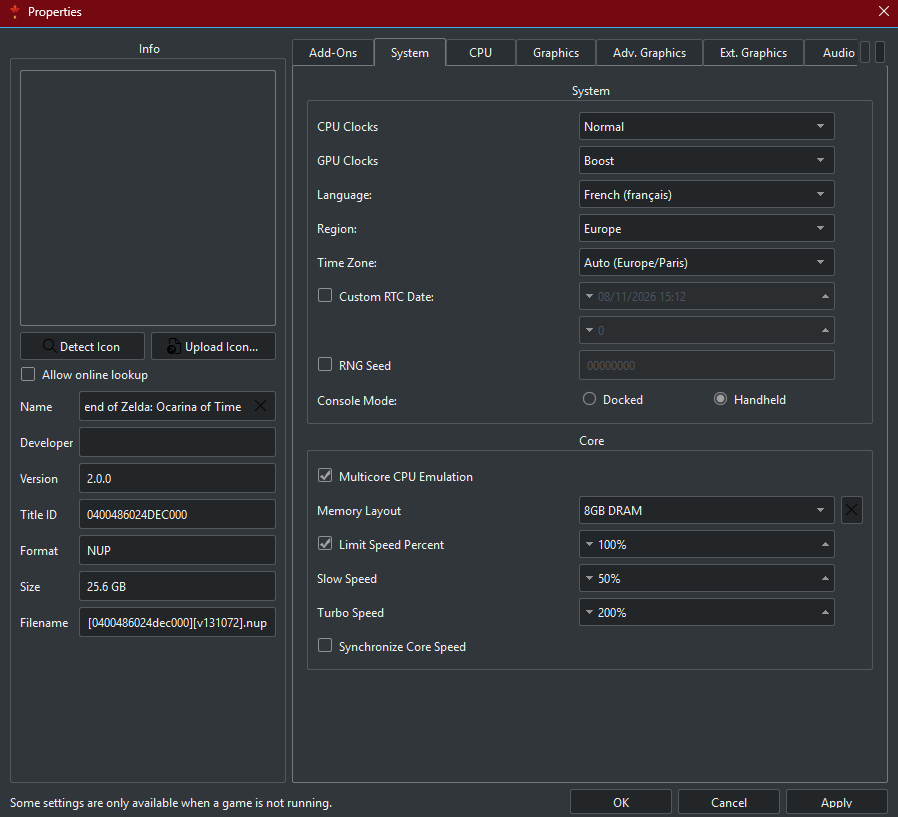
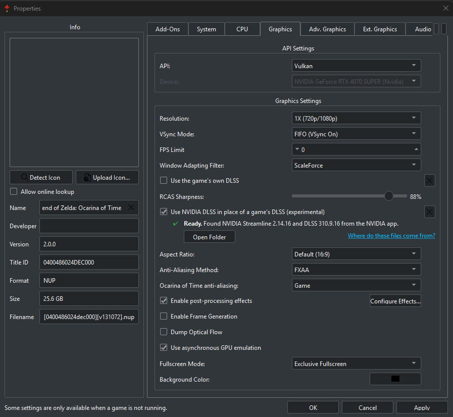

Moins de saccades et une image plus nette : les bons réglages, étape par étape.
Zelda: Ocarina of Time
Less stutter and a sharper image: the right settings, step by step.
Zelda: Ocarina of Time
Weniger Ruckler und ein schärferes Bild: die richtigen Einstellungen, Schritt für Schritt.
1Vérifier que le jeu est prêt
Ocarina of Time apparaît dans la liste des jeux d'Erable (voir Ajouter vos jeux).
Faites un clic droit sur le jeu → Configure Game.
Tous les réglages ci-dessous se font dans cette fenêtre, et ne concernent qu'Ocarina of Time : vos autres jeux gardent leurs réglages. Le jeu doit être fermé.
2Installer le mod de shaders
Le mod ootrshaders limite les saccades : moins de shaders à préparer pendant que vous jouez.
Onglet Add-Ons → Import Mod from ZIP.
Choisissez ootrshaders.zip, puis le type RomFS.
Vérifiez que ootrshaders est coché, puis Apply.

Les trois add-ons cochés : ootrshaders (LayeredFS), et les deux intégrés à Erable, Max Resolution et Dynamic FPS by Dark.
Max Resolution et Dynamic FPS sont déjà inclus dans Erable : laissez-les cochés.
Ne prenez ce zip qu'auprès d'une personne de confiance, et analysez-le avec Microsoft Defender avant de l'importer. Un mod de shaders ne contient jamais de .exe.
3Augmenter la mémoire émulée
Onglet System, partie Core.
Memory Layout : 6GB DRAM ou 8GB DRAM.
Apply.

Onglet System : Memory Layout sur 8GB DRAM.
Choisissez 8GB seulement si votre PC a au moins 16 Go de mémoire vive, et 6GB s'il en a 12 Go. Sinon, laissez 4GB DRAM (Default) : le PC ralentirait au lieu d'accélérer. Pour connaître votre mémoire : Ctrl + Maj + Échap → Performance → Mémoire.
4Choisir Vulkan et votre carte graphique
Onglet Graphics.
API : Vulkan.
Device : votre carte graphique (NVIDIA GeForce ou AMD Radeon), pas la puce graphique intégrée au processeur.
Resolution : 1X (720p/1080p).
5Activer le DLSS
Ocarina of Time agrandit son image avec son propre réseau « DLSS ». Selon votre carte :
Carte NVIDIA (GeForce RTX) : cochez Use NVIDIA DLSS in place of a game's DLSS. La ligne Ready doit apparaître en vert ; sinon, ouvrez l'application NVIDIA pour qu'elle télécharge les fichiers DLSS, puis rouvrez cette fenêtre.
Autre carte (AMD, Intel) : cochez Use the game's own DLSS.
Apply, puis OK.

Onglet Graphics sur une carte NVIDIA : Vulkan, résolution 1X et DLSS NVIDIA « Ready ».
Le DLSS NVIDIA remplace celui du jeu uniquement en résolution 1X : gardez Resolution sur 1X, le DLSS se charge d'agrandir l'image.
6Précompiler les shaders
Au premier lancement du jeu, Erable propose de préparer les shaders avant de jouer, ce qui évite la plupart des saccades de la première partie.
Lancez le jeu, puis choisissez Précompiler maintenant.
Patientez quelques minutes : le jeu démarre tout seul à la fin.
Cette étape n'a lieu qu'une fois. Elle recommence seulement après une mise à jour du pilote de la carte graphique.
7Reprendre le cache d'un autre PC
Si vous avez déjà joué sur un autre PC, son cache de shaders évite presque toutes les saccades sur celui-ci.
Sur le PC qui a déjà joué : clic droit sur le jeu → Ouvrir le cache de pipelines transférable.
Fermez Erable, puis copiez le dossier 0400486024dec000 sur une clé USB.
Sur l'autre PC : ouvrez le même emplacement de la même façon, fermez Erable, puis collez-y le dossier en remplaçant celui qui existe.
Gardez ce dossier pour vous : il contient des éléments du jeu et ne doit pas être publié sur Internet.
✓Et ensuite ?
Lancez le jeu. Les premières minutes, et à chaque nouvelle zone, quelques saccades restent normales le temps que l'émulateur prépare les shaders ; elles disparaissent ensuite. Ne videz pas le cache de shaders entre deux parties.
Ocarina of Time shows up in Erable's game list (see Add your games).
Right-click the game → Configure Game.
All the settings below are made in this window and only apply to Ocarina of Time: your other games keep their settings. The game must be closed.
2Install the shader mod
The ootrshaders mod cuts stutter: fewer shaders to prepare while you play.
Add-Ons tab → Import Mod from ZIP.
Pick ootrshaders.zip, then the RomFS type.
Check that ootrshaders is ticked, then Apply.
The three add-ons ticked: ootrshaders (LayeredFS), and the two built into Erable, Max Resolution and Dynamic FPS by Dark.
Max Resolution and Dynamic FPS already come with Erable: leave them ticked.
Only take this zip from someone you trust, and scan it with Microsoft Defender before importing it. A shader mod never contains an .exe.
3Raise the emulated memory
System tab, Core section.
Memory Layout: 6GB DRAM or 8GB DRAM.
Apply.
The System tab: Memory Layout on 8GB DRAM.
Choose 8GB only if your PC has at least 16 GB of RAM, and 6GB if it has 12 GB. Otherwise leave 4GB DRAM (Default): the PC would slow down instead of speeding up. To see your memory: Ctrl + Shift + Esc → Performance → Memory.
4Choose Vulkan and your graphics card
Graphics tab.
API: Vulkan.
Device: your graphics card (NVIDIA GeForce or AMD Radeon), not the graphics built into the processor.
Resolution: 1X (720p/1080p).
5Turn on DLSS
Ocarina of Time upscales its image with its own "DLSS" network. Depending on your card:
NVIDIA card (GeForce RTX): tick Use NVIDIA DLSS in place of a game's DLSS. The Ready line should appear in green; if not, open the NVIDIA app so it downloads the DLSS files, then reopen this window.
Other card (AMD, Intel): tick Use the game's own DLSS.
Apply, then OK.
The Graphics tab on an NVIDIA card: Vulkan, 1X resolution and NVIDIA DLSS "Ready".
NVIDIA DLSS replaces the game's only at 1X resolution: keep Resolution on 1X and let DLSS upscale the image.
6Precompile the shaders
The first time you start the game, Erable offers to prepare the shaders before you play, which avoids most of the first session's stutter.
Start the game, then choose Précompiler maintenant (precompile now).
Wait a few minutes: the game starts by itself at the end.
This only happens once. It runs again only after a graphics driver update.
7Reuse another PC's cache
If you have already played on another PC, its shader cache avoids almost all stutter on this one.
On the PC that has played: right-click the game → Ouvrir le cache de pipelines transférable (open transferable pipeline cache).
Close Erable, then copy the 0400486024dec000 folder to a USB stick.
On the other PC: open the same place the same way, close Erable, then paste the folder there, replacing the existing one.
Keep this folder to yourself: it contains parts of the game and must not be published online.
✓What next?
Start the game. In the first minutes, and in each new area, a few stutters are normal while the emulator prepares shaders; they go away afterwards. Don't clear the shader cache between sessions.
Ocarina of Time erscheint in der Spieleliste von Erable (siehe Spiele hinzufügen).
Rechtsklick auf das Spiel → Configure Game.
Alle folgenden Einstellungen nimmst du in diesem Fenster vor, und sie gelten nur für Ocarina of Time: Deine anderen Spiele behalten ihre Einstellungen. Das Spiel muss geschlossen sein.
2Den Shader-Mod installieren
Der Mod ootrshaders verringert Ruckler: weniger Shader, die während des Spielens vorbereitet werden müssen.
Reiter Add-Ons → Import Mod from ZIP.
Wähle ootrshaders.zip und dann den Typ RomFS.
Prüfe, dass ootrshaders angehakt ist, dann Apply.
Die drei angehakten Add-ons: ootrshaders (LayeredFS) sowie die beiden in Erable enthaltenen, Max Resolution und Dynamic FPS by Dark.
Max Resolution und Dynamic FPS sind bereits in Erable enthalten: Lass sie angehakt.
Nimm diese ZIP-Datei nur von einer Person, der du vertraust, und prüfe sie vor dem Import mit Microsoft Defender. Ein Shader-Mod enthält nie eine .exe.
3Emulierten Speicher erhöhen
Reiter System, Bereich Core.
Memory Layout: 6GB DRAM oder 8GB DRAM.
Apply.
Reiter System: Memory Layout auf 8GB DRAM.
Wähle 8GB nur, wenn dein PC mindestens 16 GB Arbeitsspeicher hat, und 6GB bei 12 GB. Sonst lass 4GB DRAM (Default): Der PC würde langsamer statt schneller. Deinen Speicher siehst du unter Strg + Umschalt + Esc → Leistung → Arbeitsspeicher.
4Vulkan und deine Grafikkarte wählen
Reiter Graphics.
API: Vulkan.
Device: deine Grafikkarte (NVIDIA GeForce oder AMD Radeon), nicht die im Prozessor eingebaute Grafik.
Resolution: 1X (720p/1080p).
5DLSS einschalten
Ocarina of Time skaliert sein Bild mit einem eigenen „DLSS“-Netz hoch. Je nach Karte:
NVIDIA-Karte (GeForce RTX): Hake Use NVIDIA DLSS in place of a game's DLSS an. Die Zeile Ready sollte grün erscheinen; falls nicht, öffne die NVIDIA-App, damit sie die DLSS-Dateien lädt, und öffne dieses Fenster erneut.
Andere Karte (AMD, Intel): Hake Use the game's own DLSS an.
Apply, dann OK.
Reiter Graphics mit einer NVIDIA-Karte: Vulkan, Auflösung 1X und NVIDIA DLSS „Ready“.
NVIDIA DLSS ersetzt das des Spiels nur bei Auflösung 1X: Lass Resolution auf 1X, DLSS übernimmt das Hochskalieren.
6Shader vorkompilieren
Beim ersten Start des Spiels bietet Erable an, die Shader vor dem Spielen vorzubereiten. Das vermeidet die meisten Ruckler der ersten Runde.
Starte das Spiel und wähle Précompiler maintenant (jetzt vorkompilieren).
Warte ein paar Minuten: Am Ende startet das Spiel von selbst.
Das passiert nur einmal – erneut nur nach einem Update des Grafiktreibers.
7Den Cache eines anderen PCs übernehmen
Hast du schon auf einem anderen PC gespielt, vermeidet dessen Shader-Cache auf diesem fast alle Ruckler.
Auf dem PC, auf dem schon gespielt wurde: Rechtsklick auf das Spiel → Ouvrir le cache de pipelines transférable (übertragbaren Pipeline-Cache öffnen).
Schließe Erable und kopiere den Ordner 0400486024dec000 auf einen USB-Stick.
Auf dem anderen PC: Öffne denselben Ort auf dieselbe Weise, schließe Erable und füge den Ordner dort ein, wobei du den vorhandenen ersetzt.
Behalte diesen Ordner für dich: Er enthält Teile des Spiels und darf nicht im Internet veröffentlicht werden.
✓Und dann?
Starte das Spiel. In den ersten Minuten und in jedem neuen Gebiet sind ein paar Ruckler normal, während der Emulator Shader vorbereitet; danach verschwinden sie. Leere den Shader-Cache nicht zwischen zwei Runden.
 Erable
Erable